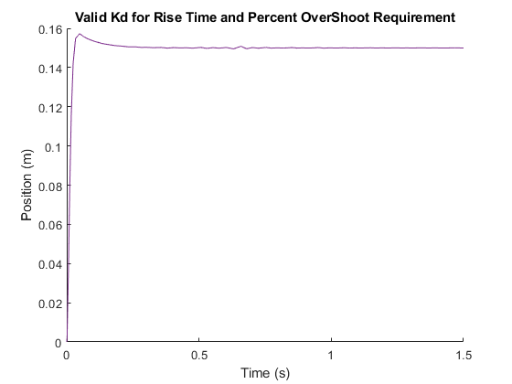

Contents
Prelab 4
m = 0.94;
r = 6.36*10^-3;
Rm = 2.6;
Kt = 7.67*10^-3;
Km = 7.67*10^-3;
Kg = 3.71;
Jm = 3.9*10^-7;
a = m*r*r*Rm + Kg*Kg*Jm*Rm;
b = Kg*Kg*Kt*Km;
c = Kg*Kt*r;
K = 15;
4.1.1
Mos = 8/100;
tr = 0.16;
e_array = linspace(0,0.9,1000);
m = @(ep) exp(-pi.*ep./sqrt(1-ep.^2));
M = m(e_array);
index = find((Mos-M) < 0.0005);
e_approx = e_array(index(end))
wn = (1.76*e_approx^3 - 0.417*e_approx^2 + 1.039*e_approx +1)/tr
e_approx =
0.6270
wn =
12.0088
4.1.2
k_array = linspace(10,60,6);
figure;
i = 1;
info = 0;
for K = k_array
sim('pl4_p');
hold on
plot(simout.Time, simout.Data);
cfinal = simout.Data(end);
percent_os = (max(simout.Data) - cfinal)/ cfinal * 100;
time1_index = find(simout.Data >= 0.1*cfinal,1);
time1 = simout.Time(time1_index);
time9_index = find(simout.Data >= 0.9*cfinal,1);
time9 = simout.Time(time9_index);
rise_time = time9 - time1;
disp(['Rise Time for K=', num2str(K), ' is:',num2str(rise_time)])
disp(['Percent Overshoot for K=', num2str(K), ' is:', num2str(percent_os), '%'])
end
title('Proportional Controller Step Response with Varying K');
xlabel('Time (s)');
legend('K = 10','K = 20','K = 30', 'K = 40', 'K = 50', 'K = 60');
close_system('pl4_p');
Rise Time for K=10 is:0.72
Percent Overshoot for K=10 is:0.17509%
Rise Time for K=20 is:0.32
Percent Overshoot for K=20 is:7.4673%
Rise Time for K=30 is:0.24
Percent Overshoot for K=30 is:14.9507%
Rise Time for K=40 is:0.16
Percent Overshoot for K=40 is:20.7101%
Rise Time for K=50 is:0.16
Percent Overshoot for K=50 is:24.8198%
Rise Time for K=60 is:0.077177
Percent Overshoot for K=60 is:28.9131%
k_array = linspace(30,40,500);
for K = k_array
sim('pl4_p');
cfinal = simout.Data(end);
percent_os = (max(simout.Data) - cfinal)/ cfinal * 100;
time1_index = find(simout.Data >= 0.1*cfinal,1);
time1 = simout.Time(time1_index);
time9_index = find(simout.Data >= 0.9*cfinal,1);
time9 = simout.Time(time9_index);
rise_time = time9 - time1;
if rise_time <= tr
figure;
plot(simout.Time, simout.Data);
disp(['Meet RT criteria at K = ', num2str(K)])
disp(['Rise Time for K=', num2str(K), ' is:',num2str(rise_time)])
disp(['Percent Overshoot for K=', num2str(K), ' is:', num2str(percent_os), '%'])
title('Min K for Rise Time Requirement');
xlabel('Time (s)');
ylabel('Position (m)');
break
end
end
close_system('pl4_p');
Meet RT criteria at K = 34.4289
Rise Time for K=34.4289 is:0.16
Percent Overshoot for K=34.4289 is:17.0199%

h_p = tf([c/a],[1 b/a 0]);
figure;
rlocus(h_p)
4.1.3
h_pd = tf([1 12],[1/250 1]);
figure;
rlocus(h_pd)
kd_array = linspace(4,5,100);
for kd = kd_array
sim('pl4_pd');
cfinal = simout.Data(end);
percent_os = (max(simout.Data) - cfinal)/ cfinal * 100;
time1_index = find(simout.Data >= 0.1*cfinal,1);
time1 = simout.Time(time1_index);
time9_index = find(simout.Data >= 0.9*cfinal,1);
time9 = simout.Time(time9_index);
rise_time = time9 - time1;
if rise_time <= tr && percent_os/100 <= Mos
figure;
plot(simout.Time, simout.Data);
disp(['Rise Time for Kd=', num2str(kd), ' is:',num2str(rise_time)])
disp(['Percent Overshoot for Kd=', num2str(kd), ' is:', num2str(percent_os), '%'])
title('Min Kd for Rise Time and Percent OverShoot Requirement');
xlabel('Time (s)');
ylabel('Position (m)');
break;
end
end
close_system('pl4_pd');
Rise Time for Kd=4.7071 is:0.15727
Percent Overshoot for Kd=4.7071 is:5.6628%
kd_array = linspace(4,50,100);
kd_pass = [];
figure;
for kd = kd_array
sim('pl4_pd');
cfinal = simout.Data(end);
percent_os = (max(simout.Data) - cfinal)/ cfinal * 100;
time1_index = find(simout.Data >= 0.1*cfinal,1);
time1 = simout.Time(time1_index);
time9_index = find(simout.Data >= 0.9*cfinal,1);
time9 = simout.Time(time9_index);
rise_time = time9 - time1;
if rise_time <= tr && percent_os/100 <= Mos
kd_pass = [kd_pass kd];
end
end
disp(['The range of acceptable kd values are from:', num2str(kd_pass(1)),' to:', num2str(kd_pass(end))])
for q = 1:4
kd = kd_pass(floor(length(kd_pass)/ 4 * q));
hold on
plot(simout.Time, simout.Data);
disp(['Rise Time for Kd=', num2str(kd), ' is:',num2str(rise_time)])
disp(['Percent Overshoot for Kd=', num2str(kd), ' is:', num2str(percent_os), '%'])
end
title('Valid Kd for Rise Time and Percent OverShoot Requirement');
xlabel('Time (s)');
ylabel('Position (m)');
close_system('pl4_pd');
The range of acceptable kd values are from:4.9293 to:50
Rise Time for Kd=15.6162 is:0.018032
Percent Overshoot for Kd=15.6162 is:4.8859%
Rise Time for Kd=27.2323 is:0.018032
Percent Overshoot for Kd=27.2323 is:4.8859%
Rise Time for Kd=38.3838 is:0.018032
Percent Overshoot for Kd=38.3838 is:4.8859%
Rise Time for Kd=50 is:0.018032
Percent Overshoot for Kd=50 is:4.8859%

kd_array = linspace(0,10,100);
for kd = kd_array
sim('pl4_pd15');
cfinal = simout.Data(end);
percent_os = (max(simout.Data) - cfinal)/ cfinal * 100;
time1_index = find(simout.Data >= 0.1*cfinal,1);
time1 = simout.Time(time1_index);
time9_index = find(simout.Data >= 0.9*cfinal,1);
time9 = simout.Time(time9_index);
rise_time = time9 - time1;
if rise_time <= tr && percent_os/100 <= Mos
figure;
plot(simout.Time, simout.Data);
disp(['Rise Time for Kd=', num2str(kd), ' is:',num2str(rise_time)])
disp(['Percent Overshoot for Kd=', num2str(kd), ' is:', num2str(percent_os), '%'])
title('Min Kd for Rise Time and Percent OverShoot Requirement');
xlabel('Time (s)');
ylabel('Position (m)');
break;
end
end
disp('Cannot fullfill both requirements with a zero at 15');
close_system('pl4_pd15');
Cannot fullfill both requirements with a zero at 15